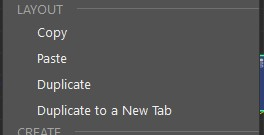
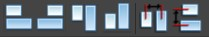

Nodes Network Layout Manipulations |
|
VERSION 1.0 |
NOTE: This script is part of the Node Editor Extended Menus and should be run via the context menu. •This script file consist of several commands for manipulating shading networks in the Node Editor.  oCopy - copies the network layout of the selected node oPaste - pastes the previously copied layout oDuplicate - duplicate selected nodes, keeping connections and the visual layout oDuplicate to a New Tab - duplicate selected node to a new tab while keeping the connections and layout  oFirst four icons are for Left, Right, Top, Bottom Align selected nodes. Hold <CTRL> to align the nodes to the first selected node. oLast two buttons are to evenly distribute the selected nodes Horizontally or Vertically. |
Ethan's RFM Enhancement Pack is a property of Ethan Phoenix.
All Rights Reserved © Ethan Phoenix. For personal use only. Commercial use is prohibited. Not for redistribution without permission.